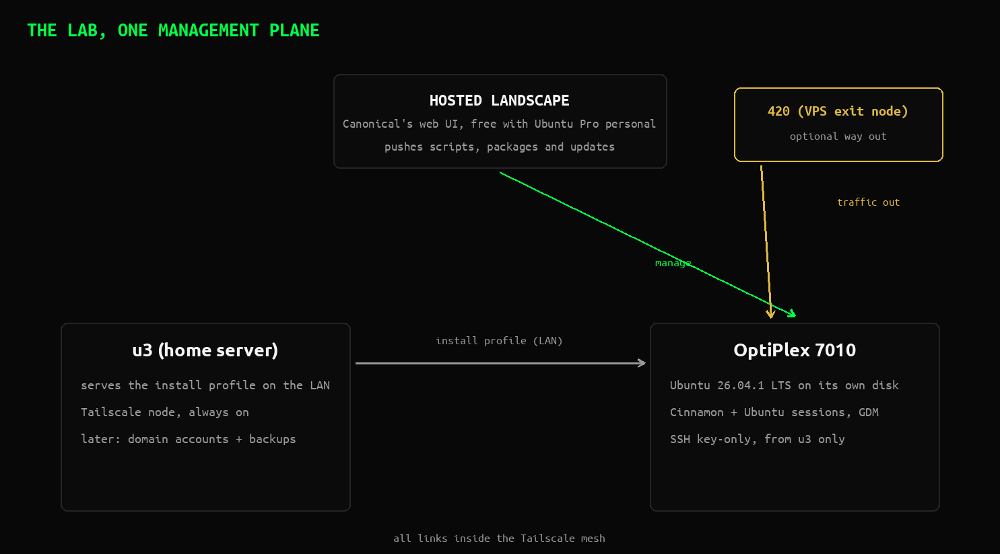
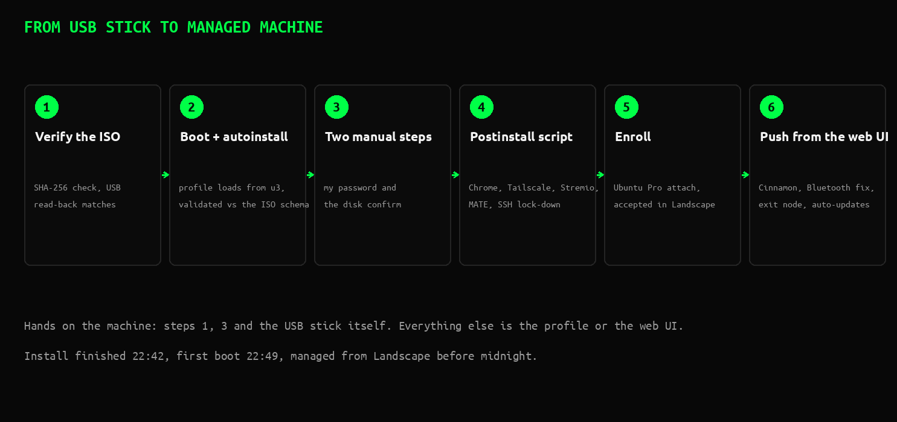
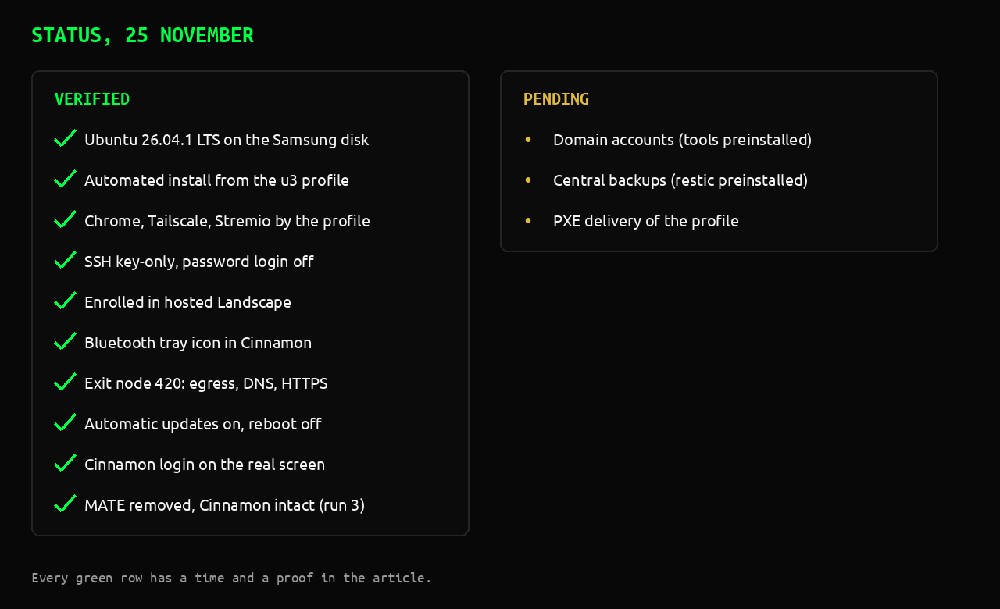

My home lab, run like an organization
CORE SETUP VERIFIED MATE REMOVED, CINNAMON KEPT The old Dell OptiPlex now runs Ubuntu 26.04.1 LTS from its own disk. The install was automated from a profile my server hands out on the local network, and the machine is managed through Canonical's hosted Landscape like a small organization: desktops, fixes and updates are pushed from a web UI, not typed at the keyboard. Cinnamon login, the Bluetooth tray icon, the Tailscale exit node and automatic updates are verified on the real machine, times below. MATE is gone too: the first two removal runs stopped on their own safety guards, and the third, narrowed run removed 18 packages and left Cinnamon, GDM and the Ubuntu desktop intact. Total cost so far: 0 DKK.
The idea: an organization of one
The last experiment made one desktop boot over the network: the diskless Mint article. It worked, and the measured speed over Wi-Fi said it is too slow for daily use. So the design changed: normal local installs on each machine, central management on top.
The rules: it costs nothing, installs are automated from one profile, the machines are managed centrally the way a company would manage them, and Ubuntu's own tools are used where they exist. Separate accounts for each person, private files for each, backups on my server.
The design

u3 is the always-on server. It hands the install profile to new machines on the local network and runs Tailscale. Later it also holds the domain accounts and the backups. The OptiPlex is the first workstation. Management runs through Canonical's hosted Landscape, the same tool companies use for fleets of Ubuntu machines, free in Ubuntu Pro's personal tier. The web UI pushes scripts and packages to the machine, and the PC's outbound traffic can leave through the 420 exit node when I want it to.
The setup, with the commands

1. The installer, verified
The Ubuntu Desktop 26.04.1 LTS ISO was checked against Ubuntu's published SHA-256 hash, and the Kingston USB stick was read back and hashed again after writing:
sha256sum ubuntu-26.04.1-desktop-amd64.iso # 601e30fbf5d97759367c632e2c33630665039b7e2158fd068403da3ccf1bda1f # the written USB stick was read back and hashed the same way: match
2. The autoinstall profile
u3 serves the profile over the local network, and it was validated against the live ISO's own schema before it ran. The whole profile is below. Serial and key are shortened here on purpose.
autoinstall:
version: 1
interactive-sections: [identity, storage] # I type the account and confirm the disk myself
locale: en_US.UTF-8
keyboard: {layout: dk}
timezone: Europe/Copenhagen
source: {id: ubuntu-desktop-minimal}
storage:
layout:
name: direct
match: {serial: "*S14T…46"} # shortened here; only that exact Samsung is touched
ssh:
install-server: true
allow-pw: false # key-only login
authorized-keys: ["ssh-ed25519 AAAA… u3-pc-access"] # u3's management key, shortened
packages: [curl, ca-certificates, flatpak, sssd-ad, sssd-tools, realmd, adcli,
libnss-sss, libpam-sss, samba-common-bin, restic,
mate-desktop-environment-core, xserver-xorg]
updates: security
shutdown: poweroff
The safety gate is an early command that runs before anything touches the disk: it lists the machine's disks and stops the install unless the approved Samsung is the only match on serial, size and bus. A wrong disk means the install refuses to start.
python3 - <<'PY'
import json, subprocess
disks = json.loads(subprocess.check_output(
['lsblk', '-b', '-d', '-J', '-o', 'NAME,SIZE,MODEL,SERIAL,TRAN']))['blockdevices']
match = [d for d in disks if d.get('serial') == '<the approved serial>'
and d.get('size') == 128035676160 and d.get('tran') == 'sata']
assert len(match) == 1, 'Approved Samsung not uniquely present'
PY
3. The postinstall script
When the base system is installed, the profile's last step runs one script. This is the full script as it ran:
#!/bin/bash set -euo pipefail export DEBIAN_FRONTEND=noninteractive install -d -m0755 /usr/share/keyrings /etc/apt/sources.list.d curl --fail --location --retry 3 https://pkgs.tailscale.com/stable/ubuntu/resolute.noarmor.gpg -o /usr/share/keyrings/tailscale-archive-keyring.gpg curl --fail --location --retry 3 https://pkgs.tailscale.com/stable/ubuntu/resolute.tailscale-keyring.list -o /etc/apt/sources.list.d/tailscale.list apt-get update apt-get install -y tailscale curl --fail --location --retry 3 https://dl.google.com/linux/direct/google-chrome-stable_current_amd64.deb -o /var/tmp/google-chrome-stable.deb apt-get install -y /var/tmp/google-chrome-stable.deb rm /var/tmp/google-chrome-stable.deb flatpak remote-add --system --if-not-exists flathub https://flathub.org/repo/flathub.flatpakrepo flatpak install --system --noninteractive -y flathub com.stremio.Stremio # Keep GDM and both Ubuntu Wayland and MATE X11 sessions. test -f /usr/share/wayland-sessions/ubuntu.desktop test -f /usr/share/xsessions/mate.desktop test -x /usr/libexec/gdm-x-session # Set actual SSH policy even if this image does not load sshd_config.d. printf '%s\n' 'PasswordAuthentication no' 'KbdInteractiveAuthentication no' 'PermitRootLogin no' 'PubkeyAuthentication yes' > /etc/ssh/sshd_config.d/00-lab-management.conf if ! grep -q '^Include /etc/ssh/sshd_config.d/' /etc/ssh/sshd_config; then sed -i '1iInclude /etc/ssh/sshd_config.d/*.conf' /etc/ssh/sshd_config fi sshd -t systemctl enable tailscaled ssh install -d -m0755 /usr/local/share/applications cat > /usr/local/share/applications/whatsapp-web.desktop <<'APP' [Desktop Entry] Type=Application Name=WhatsApp Web Exec=google-chrome --app=https://web.whatsapp.com/ Terminal=false Categories=Network;InstantMessaging; APP # Domain controller, join credentials and backup destination are provisioned later. install -d -m0755 /var/lib/andreas-lab printf '%s\n' 'base-apps-installed; domain-enrolment-pending; backup-configuration-pending; tailscale-auth-pending' > /var/lib/andreas-lab/provisioning-state
4. Management: Ubuntu Pro and Landscape
First boot was 22:49. Attaching management took two commands on the machine:
sudo pro attach # free personal tier, device code in the browser sudo pro enable landscape # then accept the pending "optiplex" in the Landscape dashboard
From then on the keyboard is optional. Cinnamon, the Bluetooth fix, the exit node and the update policy below were all pushed from the dashboard.
5. Pushing the desktop and the fixes
The stock install kept Ubuntu's own desktop and added MATE as the second session. Once the machine was in Landscape, Cinnamon became the working desktop, pushed as a script job:
# the Cinnamon desktop, pushed from the web UI (77 packages, 182 MB of disk) apt-get install -y cinnamon-core # the Bluetooth tray icon apt-get install -y blueman xapp-sn-watcher
The Bluetooth script also starts the applet inside the logged-in Cinnamon session, so the icon appeared in the tray without a logout. I confirmed it on the screen at 00:22. Cinnamon itself I confirmed at 00:55 by logging in on the real machine.
6. Exit node and automatic updates
The OptiPlex can route its traffic through 420, the small VPS that already carries u3's traffic. The pushed job selects it and then proves the route before reporting success:
# find the online exit node "420" on the tailnet, then route through it tailscale set --exit-node=<420's tailnet address> # the proof: the machine's public IP is the VPS, and DNS and HTTPS checks pass
The same job set the update policy. The verified config on the machine:
APT::Periodic::Unattended-Upgrade "1"; Unattended-Upgrade::Automatic-Reboot "false"; # the Chrome and Tailscale repositories are added to the allowed origins # a Flatpak timer updates Stremio daily, 03:45-04:00 # a Landscape upgrade profile runs all updates daily at 02:15 UTC, no auto-remove
7. Removing MATE, with guards
With Cinnamon verified, MATE goes. The removal script refuses to run anywhere except optiplex, refuses while a MATE session is active, checks that Cinnamon, GDM and the Ubuntu session are installed, simulates the removal first, and stops if anything outside the MATE packages would be removed. No autoremove, no purge, no reboot:
[ "$(hostname -s)" = optiplex ] || exit 20
pgrep -x cinnamon >/dev/null || { echo 'STOP: no running Cinnamon'; exit 21; }
if pgrep -x mate-session >/dev/null; then echo 'STOP: MATE session active'; exit 22; fi
# protected: cinnamon, cinnamon-core, cinnamon-session, gdm3, ubuntu-desktop, ubuntu-session
# the removal is simulated first; anything outside the MATE packages aborts the run
Then it took three runs, and the guards earned their place. Run one (00:56) stopped on a too-strict check: it expected the full ubuntu-desktop metapackage, which the minimal install does not carry. Nothing was touched. Run two (02:55) had corrected checks, but the dry run showed that removing the broad MATE list would pull Cinnamon and cinnamon-core out with it. It stopped before touching anything. Run three (03:55) was narrowed: it dry-runs every candidate one by one, keeps anything whose removal would pull a protected package, and removes only the validated set.
VERIFIED The third run removed 18 MATE packages. Cinnamon, GDM and Ubuntu Desktop Minimal are verified intact, the Cinnamon session kept running, no reboot and no logout. The MATE entry is gone from the login screen.
What is verified
| Check | Result | Verified |
|---|---|---|
| ISO hash and USB read-back | Match (SHA-256 601e30fb…bda1f) | 24 Nov, before install |
| Profile validation | Valid against the live ISO's own schema | before install |
| Automated install | Ubuntu 26.04.1 LTS on the Samsung; manual steps were my password and the disk confirm | 24 Nov 22:42-22:49 |
| Base apps from the profile | Chrome, Tailscale, Stremio, MATE, WhatsApp Web launcher | first boot |
| SSH | Key-only from u3, password and root login off | first boot |
| Hosted Landscape | "optiplex" accepted in the dashboard | 24 Nov 23:20 |
| Tailscale | Enrolled with the official login, no keys stored | 25 Nov 00:00 |
| Bluetooth tray icon | Shows in Cinnamon, confirmed on the screen | 25 Nov 00:22 |
| Exit node 420 | Public egress is the VPS, DNS and HTTPS pass | 25 Nov 00:53 |
| Automatic updates | Dry run passes, reboot off, Flatpak timer on | 25 Nov 00:53 |
| Cinnamon login | I logged in on the real screen | 25 Nov 00:55 |
| MATE removal | 18 packages removed on the third, narrowed run; Cinnamon, GDM and Ubuntu Desktop Minimal intact, no reboot | 25 Nov, three runs 00:56-03:55 |
Not proven yet
- PENDING Domain accounts: sssd, realmd and adcli are preinstalled; the join is not done.
- PENDING Central backups: restic is preinstalled; no destination or schedule yet.
- PENDING PXE install: the profile came from a USB stick this time; network boot of the same profile is untested.
What it costs
0 DKK for everything in this article. Ubuntu Pro's personal tier is free for up to five machines and includes the hosted Landscape used here. Ubuntu, Cinnamon, Tailscale's free plan, Flathub and restic cost nothing. The OptiPlex is an old office PC. The only running cost nearby is the small VPS behind the 420 exit node, which I already pay for, and the PC works without it.
Next

Domain accounts on u3 next, so each person logs in with their own account on any machine. Then restic backups to u3, and a second machine to prove the profile repeats. I make the decisions and do the physical steps: the USB stick, the BIOS, the password. My AI assistant writes the profile and the scripts and does the remote work through Landscape. Disk serials, keys, addresses and account IDs are shortened or left out of this article on purpose.
Back to the blog